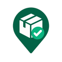

TrackerPalYour package list stays in Chrome
TrackerPal stores package names, tracking numbers or optional pickup addresses, carriers, delivery statuses, received states, and entry dates locally in your Chrome profile. TrackerPal has no advertising or analytics and does not send your package list to a TrackerPal server.
An optional pickup address is personal and location information you type yourself. TrackerPal does not read your device location, browser location, or location from websites.
What happens when you click a carrier
TrackerPal opens the selected carrier's official tracking page when you click a shipped package's carrier pill. The tracking number is included in that carrier URL so the carrier can show the shipment. Pickup entries do not open a carrier site or send their optional address anywhere. The carrier handles a tracking-page visit under its own privacy policy.
Local history downloads
In the All view, you can download received shipment history as CSV or PDF. The file is created on your device after you click a download button and may include package names, tracking numbers or pickup addresses, carriers, statuses, entry dates, and completion dates. TrackerPal does not upload the file or its contents.
Your control
You can delete individual entries at any time, erase all TrackerPal information with the button below, or remove the extension. Removing TrackerPal from Chrome removes its locally stored extension data from that Chrome profile.
Permissions
The sidePanel permission displays TrackerPal beside the current tab. The storage permission remembers your package list and consent choice. TrackerPal does not request permission to read websites, tabs, browsing history, email, cookies, or location.
Effective August 13, 2026